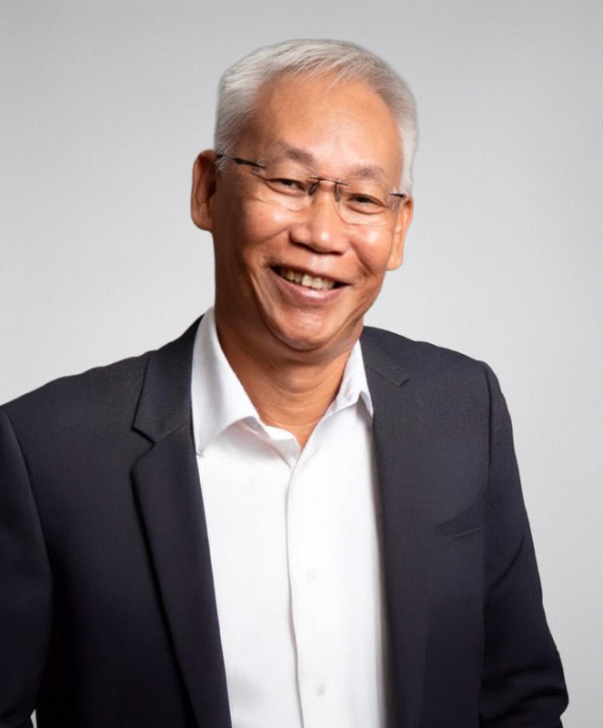
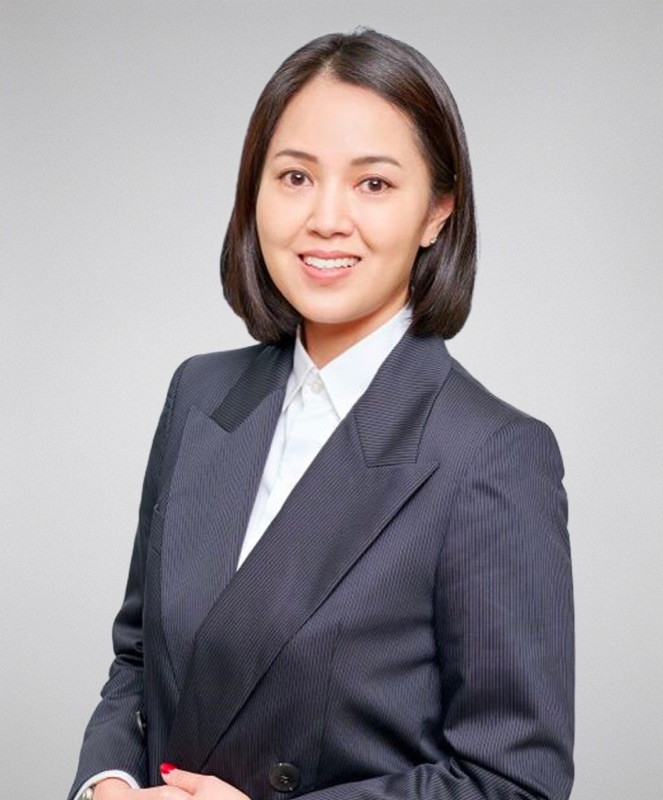
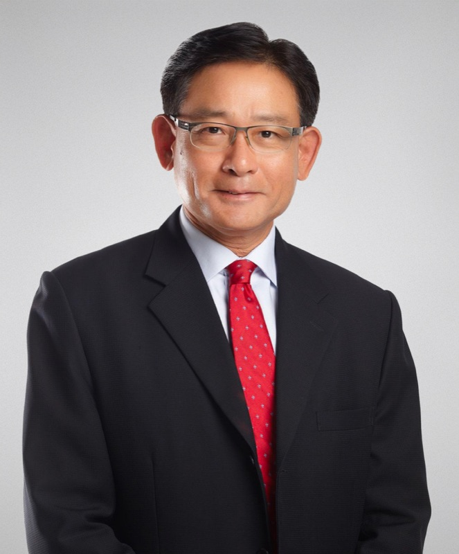

Investor Relations
Corporate Information
Board of Directors

Ko Chee Wah
Executive Chairman
Mr Ko Chee Wah is the Executive Chairman and co-founder of the Group, providing strategic mentorship and guidance on business direction and development. Mr Ko was appointed as a Director of our Company on 6 January 2023 and was later redesignated as Executive Chairman on 30 March 2026.
With over 30 years of experience in the MICE industry, Mr Ko brings deep industry expertise and an extensive global network. Prior to founding the Group, Mr Ko was the co-founder, Executive Director and Group Managing Director of Cityneon Holdings Pte. Ltd., where he led the origination and execution of major international projects, including Universal Studios Singapore at Resorts World Sentosa, the Nanjing Youth Olympic Games 2014, and the Southeast Asian Games 2015. Earlier in his career, he held management roles at Sim Lim Company (Pte) Limited and Wing Tai Enterprises Pte. Ltd.
Mr Ko holds a Bachelor of Business Administration from the University of Singapore, now known as the National University of Singapore.

Vincent Chai
Executive Director and Chief Executive Officer
As Chief Executive Officer and co-founder of the Group, Mr Vincent Chai is responsible for setting its overall vision and strategic direction. He brings over 20 years of experience in events and experience creation. Mr Chai was appointed as a Director of our Company on 6 January 2023 and was later redesignated as an Executive Director on 30 March 2026.
Prior to co-founding the Group, Mr Chai was a Senior Project Manager at Cityneon Events Pte. Ltd., where he played a key role in delivering major projects such as the Nanjing Youth Olympic Games 2014 and the Southeast Asian Games 2015. He was also the founder of Kinemat Pte. Ltd., a youth marketing agency, and has entrepreneurial experience in establishing and operating dining and entertainment businesses in Singapore.
Mr Chai holds a Bachelor of Social Science (Money, Banking and Finance) from the University of Birmingham, as well as a Diploma in Mechatronics from Singapore Polytechnic. His combined experience across project execution, entrepreneurship, and strategic leadership underpins the Group's ability to innovate and scale within the evolving events and experiential tourism landscape.

Leong Yue Kheong
Lead Independent Director
Appointed as Lead Independent Director on 30 March 2026, Mr Leong Yue Kheong brings extensive leadership experience across tourism, public sector development, and strategic planning. He is the founder of 3 Quensz, a consulting firm specialising in coaching, mentoring, and tourism master planning.
Mr Leong previously served as Deputy Chief Executive Officer (Development) of Mandai Park Development Pte. Ltd., where he led the planning and execution of key developments within the Mandai wildlife and nature precinct, including Bird Paradise and the Mandai Rainforest Resort.
Prior to that, he was Assistant Chief Executive of the Singapore Tourism Board, where he led international and marketing efforts to strengthen Singapore's global tourism positioning. He also served as Project Director for the inaugural Formula One Singapore night race in 2008.
Before entering the tourism sector, Mr Leong served in the Singapore Armed Forces for 30 years, attaining the rank of Brigadier-General and receiving multiple Public Administration Medals for his contributions.
He holds a Master of Social Science (Counselling) from the University of South Australia and completed the Stanford–National University of Singapore Executive Program. He is also a Fellow of the Australian College of Defence and Strategic Studies.

Ong Lizhen, Daisy
Independent Director
Ms Daisy Ong was appointed as Independent Director on 30 March 2026. With over 20 years of experience in audit, accounting, investments, and finance, Ms Ong is currently the Chief Financial Officer of Fu Yu Corporation Limited and also serves as an Independent Director of HG Metal Manufacturing Limited, a company listed on the SGX Mainboard. Prior to her current roles, she was the Chief Financial Officer of Allied Technologies Limited.
Ms Ong began her career with Ernst & Young LLP and subsequently held various finance and leadership roles across companies listed on the SGX, Hong Kong Exchange, and Australian Securities Exchange.
Ms Ong holds a Bachelor of Accountancy from Nanyang Technological University and is a member of the Institute of Singapore Chartered Accountants.

Lim Jun Xiong, Steven
Independent Director
Mr Steven Lim was appointed as Independent Director on 30 March 2026, and brings more than 30 years of experience in the financial, trust, and wealth management industry. Mr Steven Lim has held senior leadership roles across major financial institutions, including serving as Chief Executive Officer of SG Trust (Asia) Ltd, a subsidiary of Société Générale Private Banking, and as Managing Director of Global Wealth Solutions at HSBC Investment Bank Asia Limited.
He began his career at PricewaterhouseCoopers LLP and has since built extensive expertise in financial services and wealth advisory. Mr Lim currently serves as an independent director for several SGX-listed companies, including HC Surgical Specialists Limited, Baker Technology Limited, and Riverstone Holdings Limited.
He holds a Bachelor of Commerce from the University of Newcastle (New South Wales) and is a Fellow of CPA Australia and the Institute of Certified Public Accountants of Singapore, as well as a member of the Society of Trust and Estate Practitioners (Singapore Branch).
Executive Directors

Adrian Tan
Chief Commercial Officer
Mr Adrian Tan is the CCO and co-founder of the Group, and is responsible for overseeing sales, commercial strategy, partnerships, and marketing initiatives.
With almost 20 years of experience in experience creation and event presentation, Mr Tan previously served as an Accounts Manager at Cityneon Events Pte. Ltd., where he was involved in the delivery and execution of major events, including the Singapore 2010 Youth Olympic Games, Singapore National Games 2012, and the 2015 Southeast Asian and Para Games.
He also served as Deputy Overlay Manager for the Malaysian Southeast Asian Games Organising Committee, advising on venue planning, logistics, and cross-functional coordination for the 2017 Southeast Asian Games in Kuala Lumpur. Mr Tan began his career as a producer at Kinemat Pte. Ltd., where he led the creation of live shows and advertising content.
He holds a Diploma in Audio Engineering from the School of Audio Engineering. His strong commercial acumen and hands-on experience in large-scale event execution support the Group's ability to drive revenue growth and build long-term client partnerships.

Clement Tan
Chief Operating Officer
Mr Clement Tan oversees project operations and manpower resources across the Group's businesses, with extensive experience in operational leadership and large-scale event execution.
Prior to co-founding the Group, Mr Tan was the General Manager (Sports Division) and Business Development Manager at Cityneon Events Pte. Ltd., where he was responsible for managing operations, driving business development, and overseeing staff training. During his tenure, he was involved in major international events, including the Nanjing 2013 Asian Youth Games, Nanjing 2014 Youth Olympic Games, and the 2015 Southeast Asian and Para Games in Singapore.
Mr Tan has also served as a consultant for the Nanjing 2014 Youth Olympic Games and provided consultancy services for the 2018 FIFA World Cup in Russia. Earlier in his career, he was the Head of Logistics Resource Management for the Singapore Youth Olympic Games Organising Committee and served as an officer in the Singapore Armed Forces for 10 years.
Mr Tan holds a Diploma in Business from Temasek Polytechnic and a Bachelor of Science in Management (Honours) from the University of London. His deep operational expertise and disciplined leadership underpin the Group's ability to deliver complex, large-scale projects efficiently.

Raymond Lee
Group Financial Controller
Mr Raymond Lee joined the Group in February 2025 and is responsible for overseeing the Group's financial reporting, audit, treasury, tax, mergers and acquisitions, and internal control functions. Mr Lee has significant experience in financial management within SGX-listed companies.
Prior to joining the Group, Mr Lee served as Group Financial Controller at Catalist-listed Livingstone Health Holdings Limited, and has held senior finance roles at Dyna-Mac Holdings Pte. Ltd., ISDN Holdings Limited, and Chasen Holdings Limited. His experience has provided him with strong familiarity with financial reporting standards and compliance requirements for companies listed on the SGX-ST.
Mr Lee began his career as an auditor at BDO LLP. He holds a Master of Business (Professional Accounting) from the University of South Australia and a Bachelor of Business Administration (Honours) from Northwood University. He is also a member of CPA Australia.